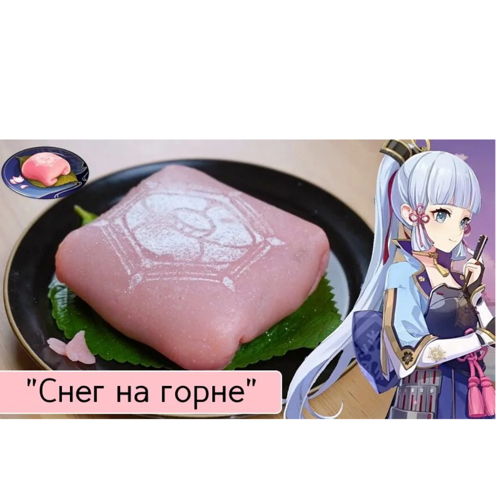

 На 3-4 пирожных Вам понадобятся:
- клейкая рисовая мука — 100 г
- сахарная пудра — 50 г
- кукурузный крахмал ~ 3 столовые ложки
- соль — щепотка
- сливочное масло — 1 чайная ложка
- молоко — 2/3 стакана
- бобовая паста анко ~ 100 г
- вишнёвый сок или пюре — 2 столовые ложки
- лепестки сакуры — опционально для декора
- маринованные листья сакуры — опционально для декора.
Также вам понадобятся микроволновка и пищевая плёнка.
Способ приготовления:
- Насыпьте муку в глубокую чашку. Добавьте соль и почти всю сахарную пудру. Перемешайте.
- Понемногу добавьте тёплое молоко, постоянно помешивая. Тесто должно быть густым, как жирная сметана.
- Добавьте растопленное сливочное масло и вишнёвый сок. Снова тщательно перемешайте.
- Закройте чашку пищевой плёнкой и поставьте в микроволновку. Готовьте 1 минуту на мощности электро 800.
- Достаньте чашку, распакуйте. Тщательно перемешайте тесто. Снова накройте плёнкой и отправьте в микроволновку ещё на минуту, на той же мощности.
- Повторяйте пункт 5, пока тесто не станет однородным.
- рисыпьте стол крахмалом и выложите на него тесто. Тщательно промните его до полной однородности — густое липкое тесто сложно идеально перемешать в чашке.
- Сформируйте из теста колбаску толщиной около 5 см. Нарежьте на кусочки такой же ширины и сформируйте из них шарики. Чтобы тесто не прилипало к рукам, присыпьте руки крахмалом.
- Возьмите один шарик и раскатайте его в тонкую лепёшку. В процессе раскатки присыпайте лепёшку крахмалом с обеих сторон, чтобы она не слипалась.
- В центр лепёшки положите бобовую пасту анко. Количество — с грецкий орех. Приплюсните пасту анко.
- Сложите правый и левый края лепёшки к центру. Затем сложите к центру верхний и нижний края.
- Присыпьте получившийся конвертик крахмалом и переверните. Присыпьте небольшим количеством крахмала со всех сторон.
- При помощи трафарета нанесите на пирожное герб клана Камисато из крахмала.
- Повторяйте пункты 5-9, пока шарики не закончатся.
- Выложите готовые пирожные на тарелки на маринованные листья сакуры. Украсьте лепестками сакуры.